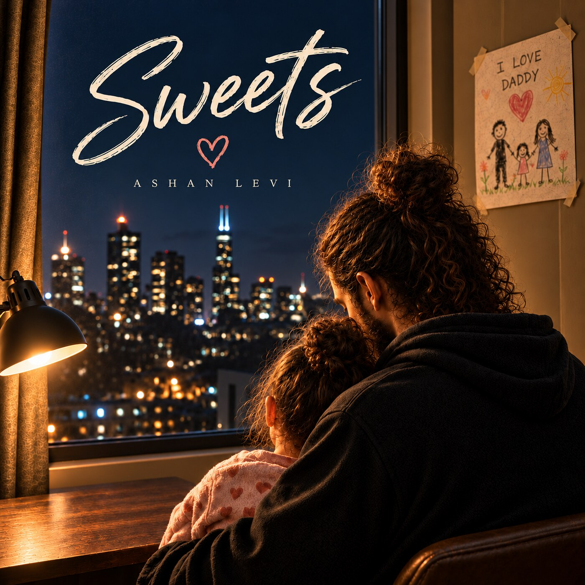

Out now
Sweets
The new single from Ashan Levi—a deeply personal song about fatherhood.
Listen on Spotify →
Discover
Choose an artist to explore their music, latest releases, streaming links, and story.

Out now
The new single from Ashan Levi—a deeply personal song about fatherhood.
Listen on Spotify →First single · October 23
Eden Rue’s debut single featuring Ashan Levi—an honest cry for mercy inspired by Mark 10:46–52.
Pre-save Louder Still →